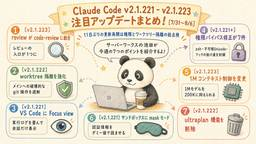
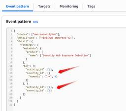
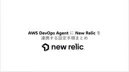
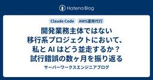
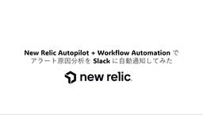
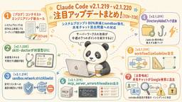

サーバーワークスエンジニアブログ
https://blog.serverworks.co.jp/
AWSトップエンジニア数「AI」「セキュリティ」部門で国内No.1のサーバーワークスのエンジニアが、AWSに関する技術情報をお届けします。
フィード

Claude Code更新 review統合・権限バイパス修正【7/31〜8/6】
サーバーワークスエンジニアブログ
はじめに サーバーワークスの池田です。 今週（7/31〜8/6）のClaude Codeは、v2.1.221からv2.1.223までの3バージョンがリリースされました。変更点は合計79項目です。 前回のv2.1.220は7月24日のリリースだったため、11日間更新が止まっていたことになります。再開後の中身は権限チェックと作業ディレクトリの隔離に関する修正に大きく偏っており、セキュリティの総点検が行われていたことをうかがわせる内容でした。 この記事で分かること /reviewが/code-reviewのエイリアスになり、エフォートレベルを覚えるようになった変更点 worktree隔離がファイル編…
5時間前

AWS Marketplaceの新機能「AI Insights」で価格設定が分かりやすくなった
サーバーワークスエンジニアブログ
こんにちは！ES課、濱岡です。 2026年8月5日、AWS Marketplaceに「AI Insights」という新機能が追加されました。製品を購入する前に、価格設定の意味をわかりやすい言葉で理解できるようになる機能です。今回はこの機能の内容を詳しく紹介します。 今回のアップデートに関する公式発表は以下です。 aws.amazon.com AI Insightsとは 表示される情報の詳細 生成の仕組みと対象範囲 実際に確認してみた 売り手側の対応 メリット・デメリット まとめ AI Insightsとは AI Insightsは、AWS Marketplaceの製品リストの価格設定セクション…
1日前

AWS Security Hub の Exposure を EventBridge でフックする Event pattern を考える
サーバーワークスエンジニアブログ
セキュリティサービス部 佐竹です。本ブログでは、AWS Security Hub の Exposure findings を Amazon EventBridge でフックする Event pattern について、実際にトラブルシューティングと動作確認を経て辿り着いた JSON をご紹介しています。
1日前

CrowdStrike Falconでオンデマンドスキャン(ODS)を実行する方法
サーバーワークスエンジニアブログ
CrowdStrike Falcon はリアルタイム保護が主な特徴ですが、特定のタイミングで任意のファイルやフォルダを手動でスキャンしたい場面もあります。本記事では「オンデマンドスキャン(ODS)」機能の使い方を画面キャプチャ付きで解説します。 CrowdStrike関連の記事一覧はこちら オンデマンドスキャンとは 通常の常駐監視とは別に、任意のタイミングで指定したパスをスキャンできる機能 インシデント対応時や定期的なコンプライアンスチェックに有効 オンデマンドスキャン設定で気をつけるべきポイント 1. ドライブ文字(C:\など)の扱いに注意！ CrowdStrikeの通常の除外設定などではド…
1日前
IAM Identity Center のマルチリージョンサポートが Identity Center ディレクトリに拡張？試してみた！
サーバーワークスエンジニアブログ
今月誕生日の人、おめでとうございます🎉 エデュケーショナルサービス課の森純子です。 2026年7月29日、AWS IAM Identity Center のマルチリージョンサポートが、Identity Center ディレクトリをアイデンティティソースとして使用するインスタンスにも拡張されました🎉 AWS IAM Identity Center extends multi-Region support to Identity Center directory（2026年7月29日） 従来、マルチリージョンサポートは外部アイデンティティプロバイダー（Okta、Microsoft Entra ID…
2日前
エンジニアリングタスクを自動化・調整するプラットフォーム「Kiro Crew」を EC2 で動かしてみた
サーバーワークスエンジニアブログ
はじめに こんにちは。高橋 (ポインコ兄) です。 「AI にタスクを頼みたいが、チャットを閉じたら止まってしまう...」そんなジレンマを解決する Kiro Crew (v0.1.2 / 2026-08-04) がリリースされました。 Kiro Crew は、Kiro のエコシステムに新しく加わった、エンジニアリングタスクを自動化・調整するプラットフォームです。 「タスクを依頼してその場を離れ、戻ってきたらタスクがおわっている」、そんな働き方を実現します。 aws.amazon.com 今回はインストールから実際の動作確認まで、手を動かしながら簡単に紹介していきます。 💡 本記事は macOS…
2日前
【検証】AWS Lambdaのセットアッププロンプトで出力はどう変わる?
サーバーワークスエンジニアブログ
はじめに 対象読者: AWSやClaude Codeにある程度慣れている方向け こんにちは。アプリケーションサービス部ディベロップメントサービス4課の眞柄です。 AWS Lambdaのコンソールに、コーディングエージェント (Claude Code、Cursor、Kiro CLIなど)向けのセットアッププロンプトを一発でコピーできる機能が追加されました。ボタンを押すとエージェントに貼り付けるだけで環境構築が終わる、という触れ込みです。 実際どれだけ便利なものか気になったので、Claude Codeを動かせる環境を用意し、実際に試してみました。 セットアッププロンプトのコピー場所 スクリーンショ…
2日前
AWS Organizations のアカウント最大割り当て数を AWS Service Quotas で確認できるようになりました
サーバーワークスエンジニアブログ
従来 AWS Support への問い合わせが必要だった AWS Organizations のアカウント上限数が、Service Quotas で確認・上限緩和申請できるようになりました。CLI での確認手順も紹介します。
3日前

Claude CodeでマルチアカウントTransit Gateway環境の構成図を自動生成する
サーバーワークスエンジニアブログ
はじめに こんにちは。日本スピッツを飼っている深瀬です。白モフに日々癒されています。 AWSアカウントが増えるにつれ、Transit Gateway（以下、TGW）や VPC Peeringなどを用いて各AWSアカウント間の通信が発生するため、構成図を作成し管理するケースが多いと思います。 しかし実際には、「構成図が存在せず全容が分からない」「過去に作られた構成図はあるけれど、手動の変更が重なって内容が古くなっている」といったことも少なくないはずです。かといって、構成図をイチから手動で描き直したり、更新し続けたりするのはかなりの手間になります。 そこで今回は、Claude Codeと aws-…
3日前
IAM Identity Center でマルチアカウント権限を有効化せずに組織インスタンスを作成できるようになりました
サーバーワークスエンジニアブログ
AWS IAM Identity Center の組織インスタンスが、マルチアカウント権限（Permission Sets）を有効化せずに作成可能になりました。サービスリンクロールのプロビジョニングを抑えつつ、アプリケーション管理のみの利用や段階的な移行が可能です。後からコンソールや API で有効化できます。
3日前
KiroCrew を Windows で動かしてみた！
サーバーワークスエンジニアブログ
今月誕生日の人、おめでとうございます🎉 エデュケーショナルサービス課の森純子です。 弊社では有志が集まって、AI駆動開発の座談会という朝活を実施してるのですが、その場で KiroCrew の話題になり、さっそくやってみました！ Introducing Kiro Crew（kiro.dev） 私は、Windows 環境で検証しましたが、なかなか一筋縄ではいきませんでした、、、。 KiroCrew（GitHub） そもそも、KiroCrew とは Kiro IDE のエージェント機能をスタンドアロンで動かせる OSS です。 Slack 連携、ダッシュボード、スケジュール実行など、AI エージェン…
3日前

【New Relic】AWS DevOps Agent に New Relic を連携する設定手順まとめ
サーバーワークスエンジニアブログ
AWS DevOps AgentとNew Relicを連携し、アラート自動調査を実現する設定ガイド。手順や注意点まで詳しく解説します。
3日前
AI に「社内の常識」を渡す仕組み、Context Ontology Accelerator とは 1
1
サーバーワークスエンジニアブログ
AI に「社内の常識」を渡す仕組み、Context Ontology Accelerator とは こんにちは、サーバーワークスで生成AIの活用推進を担当している針生です。 この記事は、「オントロジーで AI に業務知識を渡す — AWS の OSS「Context Ontology Accelerator」を試してみた」を読んで、Context Ontology Accelerator（以下 COA）の狙いと仕組みを整理したものです。 COA のデプロイ手順や動作確認については元記事で詳しく紹介されているため、この記事では、COA が解決しようとしている課題を中心に、その仕組みを見ていきます…
4日前
GuardDuty Malware Protection for S3のスキャン時間を計測してみた
サーバーワークスエンジニアブログ
はじめに 涼しい秋の訪れが待ち遠しい公森（こうもり）です。 Amazon GuardDutyのMalware Protection for S3は、S3にアップロードされたファイルを自動でマルウェアスキャンする機能です。EventBridgeと連携して結果を受け取る構成は、ファイル連携のセキュリティ対策としてよく使われています。 システムを設計する際は、全体の処理時間にこのスキャン時間も考慮する必要があります。ただ、公式ドキュメントを確認する限り、スキャン所要時間に関する記述は見当たりませんでした*1。 そこで今回は、1KB〜10GBまでファイルサイズを変え、実際のスキャン所要時間を計測し、ス…
4日前
AWSリソースの命名規則を決める時に気をつけたい制約
サーバーワークスエンジニアブログ
はじめに セキュリティグループ名をつけるとき、Security Groupの略称としてつい sg- をプレフィックスに使いたくなりますが、実はセキュリティグループ名は sg- から始めることができません。ご存知でしたか？ 命名規則を検討する段階でこの制約に気づかず、実際に構築フェーズに入ってから名前として使えないことに気づいて手戻りが発生する、というケースは珍しくありません。 本記事では、このセキュリティグループ名の制約に加えて、AWSでよく使われる主要サービスの命名規則にどのような制約があるのかを、公式ドキュメントの記載をもとにまとめます。 セキュリティグループ名の制約: 「sg-」から始め…
4日前
知っておこう！ポリシー「AWSCompromisedKeyQuarantineV3」の正体と対処法
サーバーワークスエンジニアブログ
今月誕生日の人、おめでとうございます🎉 エデュケーショナルサービス課の森純子です。 現在 AWS Certified Security - Specialty（SCS-C03）の更新受験に向けて勉強中です。その過程で AWSCompromisedKeyQuarantineV3 というポリシーの存在を知りました。AWS がアクセスキーの流出を検知したときに自動的にアタッチする隔離ポリシーです。 名前だけ見ると「何それ怖い」なのですが、改めて公式ドキュメントを読み込んでみたら、想像以上に考え抜かれた設計で、知っておくと安心する内容だったのでまとめます。 この記事では、このポリシーが何者なのか、付け…
5日前

開発業務主体ではない移行系プロジェクトにおいて、私と AI はどう並走するか？試行錯誤の数ヶ月を振り返る
サーバーワークスエンジニアブログ
開発メインではない、移行系のプロジェクトにおける Claude Code 活用の考え方・指針の実例を示す記事です。いくつかのトピックに分岐するシリーズものの第一弾として書きました。
5日前
VS Code × LM Studio × ContinueでローカルLLMのコード補完環境を作る
サーバーワークスエンジニアブログ
全体像と使用するツール LM Studio で LLM のインストール 1. LM Studio のインストール 2. ローカルLLMサーバーの起動 3. Continue の設定 実際にやってみる まとめ こんにちは。アプリケーションサービス本部ディベロップメントサービス3課の北出です。 普段はClaudeCodeをメインに使って開発しています。 IDEにはVSCodeを使っているのですが、GitHub Copilotは有料プランではありません。 その場合、Copilot機能にある、コーディング中にグレーで補完候補が出てTabキーで確定する（インライン補完）は無料版の範囲でしか使えず、すぐに…
5日前

【New Relic】New Relic Autopilot + Workflow Automation でアラート原因分析を Slack に自動通知してみた
サーバーワークスエンジニアブログ
New Relic AutopilotとWorkflow Automationを活用し、アラートの自動原因分析を行い、Slack通知を実現してみたブログになります。
5日前
IAM ポリシーシミュレーターが新しくなり AWS マネジメントコンソールに統合されました
サーバーワークスエンジニアブログ
新しい IAM ポリシーシミュレーターで SCP の条件キー付き Deny をシミュレーション可能になりました。GUI での簡易確認から CLI での精密テストまで、実際の SCP を使って新機能を検証します。
5日前
IAM Policy Simulatorが大幅強化！SCPシミュレーションを試してみた
サーバーワークスエンジニアブログ
今月誕生日の人、おめでとうございます🎉 エデュケーショナルサービス課の森純子です。 2026年7月30日、AWS Identity and Access Management（IAM）の Policy Simulator に大幅なアップデートが入りました🎉 IAM Policy Simulator moves to the IAM console and adds additional capabilities（2026年7月30日） IAM Policy Simulator は、IAM ポリシーが付与する権限をデプロイ前にテスト・検証するツールです。今回のアップデートでは、IAM コンソール…
5日前

「グラフエンジニアリング」とは何か？
サーバーワークスエンジニアブログ
「グラフエンジニアリング」とは何か？ こんにちは、サーバーワークスで生成AIの活用推進を担当している針生です。 2026年7月、AI界隈で「グラフエンジニアリング（graph engineering）」という言葉が急速に広まりました。プロンプトエンジニアリング、コンテキストエンジニアリングときて、また新しい「◯◯エンジニアリング」か、と思った方も多いのではないでしょうか。 しかし、この言葉は一過性の流行語として片付けるには惜しい、AIエージェント開発の実務的な変化を映した用語です。この記事では、グラフエンジニアリングとは何か、なぜ今この言葉が生まれたのか、そして自分には関係あるのかを整理します…
6日前

Claude Code の `/insights` を試してみた - ここまでの使い方を可視化・言語化してみよう
サーバーワークスエンジニアブログ
Claude Code の insights コマンドを使って、私の直近の利用実態をまとめてもらいました
6日前

Claude Code、誰がいくら使ってる？ それ、CloudWatch でわかります ── Coding Agent Insights とは
サーバーワークスエンジニアブログ
Amazon CloudWatchに新機能『Coding Agent Insights』が登場。AIコーディングツールの利用状況を包括的に可視化し、コスト管理やチームの開発活動を効率的に分析できます。
6日前

Claude Code更新 プロンプト削減・sandbox強化【7/24〜30】
サーバーワークスエンジニアブログ
はじめに サーバーワークスの池田です。 今週（7/24〜7/30）のClaude Codeは、v2.1.219とv2.1.220の2バージョンがリリースされました。CLI自体の変更は小粒で、v2.1.220は公式変更履歴にも「バグ修正と信頼性の改善」とだけ記載されています。 一方でAnthropicからは、システムプロンプトを80%以上削減したという技術ブログの公開と、共有チャットがGoogle検索にインデックスされていた問題への対応という、2つの大きな動きがありました。今週はこの2点を中心にお届けします。 この記事で分かること Anthropicがシステムプロンプトを80%以上削減した経緯と…
7日前

AWS Security Hub に追加された影響分析機能を試してみた
サーバーワークスエンジニアブログ
AWS Security Hub の影響分析機能を実環境で検証。攻撃パス（Blast radius）の可視化範囲を確認したところ、S3 は詳細に描かれる一方 Secrets Manager は対象外という結果に。その理由と実務での使い方を解説します。
8日前
【便利機能】CloudWatch Log Analyticsで自然言語クエリ生成を使ってみた
サーバーワークスエンジニアブログ
CloudWatch Log Analyticsで自然言語クエリ生成を使ってみた はじめに こんにちは！ エデュケーショナルサービス課の三角（みすみ）です。 2026年6月〜7月にかけてのAWSアップデートを眺めていたところ、CloudWatch Logsに自然言語でクエリを生成できる機能が追加されていることに気づきました。 aws.amazon.com 「クエリ構文を覚えなくてもログ調査ができる」という触れ込みだったので、実際にAWS Network Firewall（NFW）のログを題材に触ってみました。 本記事では、CloudWatch Log Analyticsの概要と、自然言語クエリ…
8日前
Claude Code の statusline を改造して、ターンごとのコスト感覚を掴む
サーバーワークスエンジニアブログ
Claude Code 公式機能の statusline を使って、セッション／ターンごとのコスト感覚を可視化してみる取り組みです。
8日前
Amazon Q in Connectを使ったコールセンター業務への活用例を紹介する。
サーバーワークスエンジニアブログ
はじめに Amazon Q in Connectとは どんな業務に使えるか ナレッジベースを作って試してみる ナレッジベースの構成 実際に検索させた結果 使ってみてわかったこと 使ってみて良いなと感じた点 使ってみて注意が必要だと思った点 まとめ 参考 はじめに こんにちは。サーバーワークス橋本です。 暑くてウチの猫は溶けるように床で寝ることが多く、何も考えずに歩いていたら踏んでしまいそうになります。 廊下が涼しいらしく狭い通路に3匹が占拠しているときは、歩く場所がなくなるのでさすがに解散してもらいます。 さて、コールセンター業務にAIを導入したい、でも何から始めればいいかわからない。 そんな…
8日前
【AWS Summit Japan 2026】AI が開発／運用しやすいクラウド サーバーレスの視点から考える設計原則 ― セッションレポート
サーバーワークスエンジニアブログ
はじめに この記事で学べること 前提知識・条件 結論となる3つの設計原則 原則1: コンテキストロットを前提に設計する すべての LLM（大規模言語モデル）は入力長に応じて性能が劣化する 1万行程度でもコンテキストに収まりづらい 実際どのくらいから劣化する？ ノイズとして取り込まれる要素 スマートゾーンとダムゾーン コンテキストエンジニアリング 対策としてのセッション・コンパクション 原則2: ソフトウェアを境界で分割し、近接して配置する（Pragmatic Lambda / モノレポ） なぜ境界が必要か モノレポで近接して配置する Lambda 関数の分割粒度、Pragmatic Lambd…
9日前